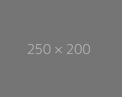

Biografie
In 1966 ben ik geboren in Mierlo-Hout. Ik was drie jaar oud toen mijn vader, Frans Vogels, solliciteerde naar een baan als docent wis- en natuurkunde op Curaçao. We stapten op de boot naar dit prachtige eiland, waar ik vijf jaar gewoond heb. Ik geef het woord ‘onvergetelijk’ betekenis in mijn personage Pien. Pien zit in de Patty van toen.